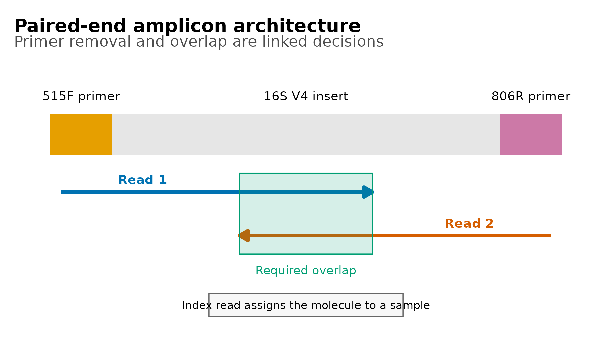
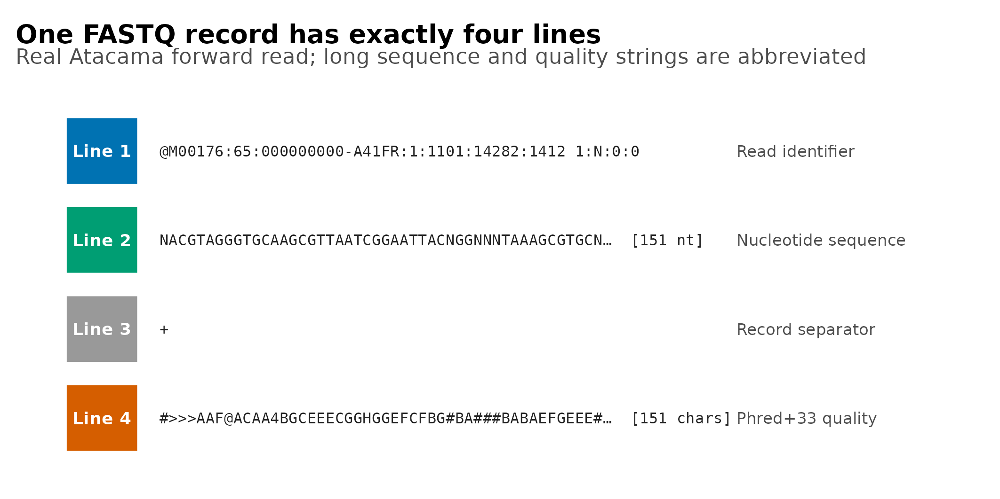
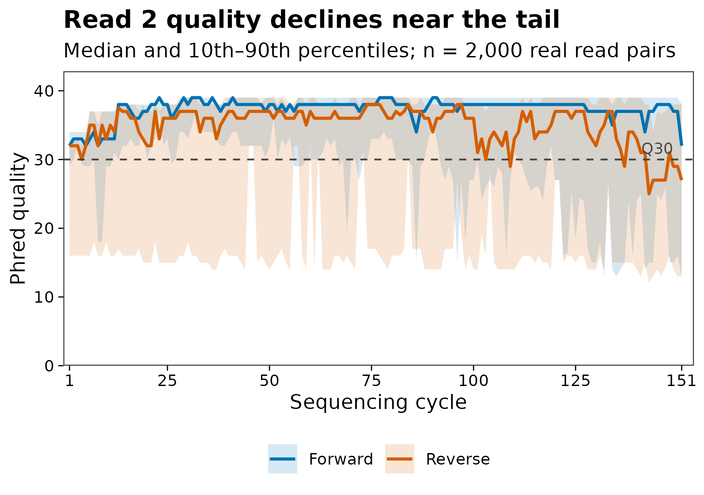
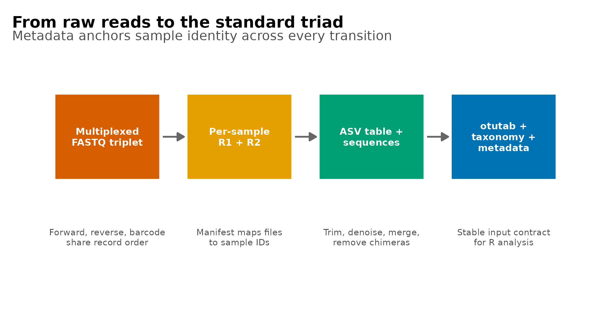

options(timeout = 600)
data_url <- "https://raw.githubusercontent.com/petemeng/microbiome-best-practices/3cb6a817e0c73ab7ecbec1cedc1ad80cbb9ecfaa/"
input_files <- c(
"data/small/fastq/barcodes.fastq.gz",
"data/small/fastq/forward.fastq.gz",
"data/small/fastq/metadata.tsv",
"data/small/fastq/reverse.fastq.gz",
"data/small/fastq/source_summary.json"
)
for (path in input_files) {
dir.create(dirname(path), recursive = TRUE, showWarnings = FALSE)
if (!file.exists(path)) download.file(paste0(data_url, path), path, mode = "wb", quiet = TRUE)
}认识你的数据：测序原理 + FASTQ / 文件格式拆解
开始分析前，先认清 FASTQ 和样本表
论文通常不会把 FASTQ 四行结构当作结果图，但一篇可信的 16S 论文至少需要让读者从 Methods 或流程图中回答五个问题：
- 测的是哪个扩增子区域，使用 single-end 还是 paired-end；
- R1、R2 与 index read 如何产生，是否已经 demultiplex；
- 原始 reads 的长度、质量编码与文件完整性是否正确；
- primer、adapter 和低质量尾端在什么位置处理；
- 原始 FASTQ 最终如何变成 feature table、代表序列、taxonomy 和 metadata。
本篇使用 QIIME 2 官方 Atacama soils paired-end 教程数据。原研究沿智利 Atacama Desert 的 Baquedano 与 Yungay 两条 transect 采集土壤，研究干旱增强对微生物群落的影响。官方 1% 数据包含 135,487 个同步的 forward、reverse 与 barcode record；这里从首尾完整覆盖的 1% 文件中等间距、保序抽取 2,000 组，既保留真实 read header 和质量分布，也让文章可以快速重复执行。
重要先确认交付类型，再写导入命令
R1/R2 两个文件不一定代表“两个样本”，也不一定已经按样本拆分。本篇数据采用 EMP multiplexed 格式：所有样本共用一份 forward.fastq.gz、一份 reverse.fastq.gz 和一份 barcodes.fastq.gz，三个文件依靠 record 顺序保持对应。若测序公司交付的是每个样本一对 FASTQ，则它们已经 demultiplex，导入方式完全不同。
数据出处与固定校验值
| 文件 | 官方 2024.5 URL | SHA-256 |
|---|---|---|
| Forward 1% | .../atacama-soils/1p/forward.fastq.gz |
392f178b...88c2702 |
| Reverse 1% | .../atacama-soils/1p/reverse.fastq.gz |
54073703...86cfae |
| Barcode 1% | .../atacama-soils/1p/barcodes.fastq.gz |
c07f517e...ff3c0f |
| Metadata | .../atacama-soils/sample_metadata.tsv |
7cff810a...c5b3bd |
完整 URL、完整校验值、2,000-record 摘录的生成规则和摘录文件校验值均保存在 data/small/fastq/source_summary.json。
下载并读取本次分析的数据
需要 R，以及 dplyr、ggplot2、knitr、scales、tidyr。本次使用Atacama 土壤示例的 2,000 组同步 FASTQ records、barcode reads 与样本信息表。
在一个新建的文件夹中运行以下代码，下载文件后按文中的顺序继续分析：
library(ggplot2)
library(dplyr)
library(tidyr)
stopifnot(
identical(
as.character(utils::packageVersion("ggplot2")),
"3.5.2"
),
identical(
as.character(utils::packageVersion("dplyr")),
"1.1.4"
),
identical(
as.character(utils::packageVersion("tidyr")),
"1.3.1"
),
identical(
as.character(utils::packageVersion("jsonlite")),
"1.8.8"
),
identical(
as.character(utils::packageVersion("digest")),
"0.6.36"
)
)
set.seed(20260719)
pal_pub <- c(
"#0072B2", "#D55E00", "#009E73", "#CC79A7",
"#E69F00", "#56B4E9", "#F0E442", "#999999"
)
scale_color_pub <- function(...) {
ggplot2::scale_color_manual(values = pal_pub, ...)
}
scale_fill_pub <- function(...) {
ggplot2::scale_fill_manual(values = pal_pub, ...)
}
theme_pub <- function(base_size = 12) {
ggplot2::theme_bw(base_size = base_size, base_family = "sans") +
ggplot2::theme(
panel.grid = ggplot2::element_blank(),
axis.text = ggplot2::element_text(color = "black"),
axis.ticks = ggplot2::element_line(
color = "black",
linewidth = 0.3
),
legend.key = ggplot2::element_blank(),
legend.background = ggplot2::element_rect(
fill = scales::alpha("white", 0.7),
color = NA
)
)
}
save_pub <- function(
plot,
file_base,
width = 120,
height = 95,
units = "mm",
dpi = 300
) {
dir.create(
dirname(file_base),
recursive = TRUE,
showWarnings = FALSE
)
ggplot2::ggsave(
paste0(file_base, ".pdf"),
plot,
width = width,
height = height,
units = units,
device = grDevices::cairo_pdf
)
ggplot2::ggsave(
paste0(file_base, ".png"),
plot,
width = width,
height = height,
units = units,
dpi = dpi,
bg = "white"
)
ggplot2::ggsave(
paste0(file_base, ".tiff"),
plot,
width = width,
height = height,
units = units,
dpi = dpi,
compression = "lzw",
bg = "white"
)
}选择输入并核对 SHA-256
默认读取随文章提供的真实摘录。若改用官方完整 1% 文件，只需把 fastq_dir 改为 data/atacama-1p。
fastq_dir <- "data/small/fastq"
fastq_paths <- c(
Forward = file.path(fastq_dir, "forward.fastq.gz"),
Reverse = file.path(fastq_dir, "reverse.fastq.gz"),
Barcode = file.path(fastq_dir, "barcodes.fastq.gz"),
Metadata = file.path(fastq_dir, "metadata.tsv")
)
stopifnot(all(file.exists(fastq_paths)))
known_sha256 <- data.frame(
File = names(fastq_paths),
ExcerptSHA256 = c(
"e6fabdbd31db519c719447f1caf2d1cd334c6ab932353e534ea2433ead88d254",
"d2fa5841d150fead5a73067a267ec531221de11c512a38ec32ada03f1621bf65",
"9cce1bb9a57975d14b54a5cf07c89b2b7c2095da4a8f0d1bd2720f1349e74057",
"8d5342f0a80abf4197088bb1ce92f4903c1bd1212f6a9182e0e1c87ebc322bcb"
),
Full1PercentSHA256 = c(
"392f178b5f15967fafb9332c0493a8b6ecbf4a7857538023813a630c488c2702",
"5407370313a3974e5b70878153841a61df408e49ced133b3ace44b2db286cfae",
"c07f517e920d9e3924ce1e87102f057232b57041947523b90d560f68a0ff3c0f",
"7cff810ad86a621ebc78a16b690255d839ea58e2622ad45a11a838d0f8c5b3bd"
),
stringsAsFactors = FALSE
)
observed_sha256 <- vapply(
fastq_paths,
digest::digest,
FUN.VALUE = character(1),
algo = "sha256",
serialize = FALSE,
file = TRUE
)
known_sha256$ObservedSHA256 <- unname(observed_sha256)
known_sha256$SourceSet <- ifelse(
known_sha256$ObservedSHA256 == known_sha256$ExcerptSHA256,
"Bundled 2,000-record excerpt",
ifelse(
known_sha256$ObservedSHA256 ==
known_sha256$Full1PercentSHA256,
"Official 1% source",
"Unknown"
)
)
stopifnot(!any(known_sha256$SourceSet == "Unknown"))
knitr::kable(
known_sha256[, c("File", "SourceSet", "ObservedSHA256")],
caption = "Input identity audit"
)| File | SourceSet | ObservedSHA256 |
|---|---|---|
| Forward | Bundled 2,000-record excerpt | e6fabdbd31db519c719447f1caf2d1cd334c6ab932353e534ea2433ead88d254 |
| Reverse | Bundled 2,000-record excerpt | d2fa5841d150fead5a73067a267ec531221de11c512a38ec32ada03f1621bf65 |
| Barcode | Bundled 2,000-record excerpt | 9cce1bb9a57975d14b54a5cf07c89b2b7c2095da4a8f0d1bd2720f1349e74057 |
| Metadata | Bundled 2,000-record excerpt | 8d5342f0a80abf4197088bb1ce92f4903c1bd1212f6a9182e0e1c87ebc322bcb |
这一关拦住的不是“下载失败”而是更危险的静默替换：同名文件被覆盖、下载不完整、上游版本变更或团队成员传错数据，都可能让后续分析在不报错的情况下变成另一批数据。
下载完整 R 脚本。脚本包含数据下载、计算和图形导出。
首次使用时安装 R 包
install.packages(c(
"ggplot2", "dplyr", "tidyr", "scales",
"jsonlite", "digest", "knitr"
))从荧光信号到四行文本
paired-end 测序得到的是两个方向的观测
Illumina sequencing by synthesis（边合成边测序）每个 cycle 延伸一个碱基并记录荧光信号。single-end 只从文库分子的一端读取；paired-end 先完成 Read 1，再经过 index read 和模板重建，从另一端得到 Read 2。一个文库分子因此对应：
- 一条 R1；
- 一条 R2；
- 一个或两个 index read，取决于建库方案。
“2 × 150 bp”标称每个文库分子从两个方向各读取 150 个碱基，不表示一个样本只有 300 bp 数据，也不表示 R1 与 R2 可以直接首尾拼接。实际文件长度应直接检查：本例保留的 R1、R2 都是 151 nt，不能用平台标称长度替代观测值。扩增子分析还要先去除 primer，再把 R2 reverse-complement 后寻找足够的 overlap。
设去 primer 与截断后的有效长度为 \(L_F\) 和 \(L_R\)，扩增子长度为 \(L_A\)，理论 overlap 为：
\[ L_{\mathrm{overlap}} = L_F + L_R - L_A \]
若 overlap 太短、两端在重叠区冲突太多，paired reads 就不能可靠合并。不能只看“尾端质量差不差”，还要同时保住扩增子几何关系。
FASTQ 的一个 record 固定为四行
@read_identifier optional_description
ACGT... # sequence
+
?IIG... # ASCII-encoded quality四行分别是：
@开头的 read identifier；- 碱基序列；
+开头的分隔行；- 与序列等长的质量字符串。
最基本的合法性条件是：
\[ n_{\mathrm{lines}} \bmod 4 = 0 \]
并且每条 read 都满足：
\[ \operatorname{length}(\mathrm{sequence}) = \operatorname{length}(\mathrm{quality}) \]
.fastq.gz 只是使用 gzip 压缩的 FASTQ。检查时应流式解压，不能把压缩文件的字节数当作 read 数。
Phred 质量是错误概率的对数尺度
Phred score \(Q\) 与碱基判错概率 \(P_e\) 的关系为：
\[ Q = -10\log_{10}(P_e), \qquad P_e = 10^{-Q/10} \]
| Phred | 估计错误概率 | 直观解释 |
|---|---|---|
| Q20 | 1% | 约每 100 个 base 错 1 个 |
| Q30 | 0.1% | 约每 1,000 个 base 错 1 个 |
| Q40 | 0.01% | 约每 10,000 个 base 错 1 个 |
现代 Illumina FASTQ 通常使用 Phred+33：质量字符的 ASCII 整数减 33 得到 \(Q\)。例如 ? 的 ASCII 值是 63，因此表示 Q30；I 的 ASCII 值是 73，因此表示 Q40。质量字符不是“越像乱码越差”，必须先解码。
深入：为什么不能只报告平均 Q30
平均 Q30 会把 cycle、方向和 read 之间的异质性压成一个数字。扩增子去噪真正需要的是：
- 每个 cycle 的质量分布；
- forward 与 reverse 分开观察；
- 碱基
N的位置； - read 长度是否一致；
- 保留足够 overlap 后的可截断区间。
如果 R2 从 cycle 120 后快速下降，整文件平均 Q30 仍可能很好看；但把 trunc-len-r 设在 150 可能造成错误率升高或合并失败。质量图用于提出截断候选值，最终参数还要用 DADA2 retention、merged reads 和 non-chimeric reads 验收。
平均质量、预期错误数和可合并长度为什么要分别看？
Phred 是对数尺度，因此先平均 Q 再转换为错误概率，与逐碱基转换后求和不是同一个量。一条 read 的预期错误数应由各位置的 10^(−Q/10) 相加得到；少数很差的尾端碱基可能对这个总和贡献很大，即使整条 read 的平均 Q 看上去仍然不错。
截去尾端通常降低预期错误数，却同时缩短与另一端的重叠。本例 R1/R2 都是 151 nt，并不意味着两端应截成相同长度：实际质量分布不同，而且还要扣除引物和被移除的位置。可接受的选择需要同时满足质量与重叠条件，再由合并率和最终非嵌合 reads 的保留情况检验。若 R2 的质量和所需重叠无法兼得，可以评估单端分析，但必须重新说明保留的扩增区及其分类分辨率，不能把单端结果与原双端特征直接当作等价测量。
区分尚未拆样与已经拆样的 FASTQ 文件
Multiplexed EMP paired-end：
forward.fastq.gz
reverse.fastq.gz
barcodes.fastq.gz
sample_metadata.tsv # sample ID ↔ barcode三个 FASTQ 的第 \(i\) 个 record 必须属于同一文库分子。任何单独排序、过滤或截取都会破坏对应。
Demultiplexed paired-end：
SampleA_R1.fastq.gz
SampleA_R2.fastq.gz
SampleB_R1.fastq.gz
SampleB_R2.fastq.gz
manifest.tsv每个样本各有一对 FASTQ，manifest 明确 sample-id、绝对路径和方向。此时通常不再需要 barcode FASTQ，但必须检查 manifest 与文件名、方向、样本数是否一致。
常见文件不是彼此替代品
| 文件/对象 | 保存什么 | 是否含质量 | 典型阶段 |
|---|---|---|---|
| FASTQ / FASTQ.GZ | reads + per-base quality | 是 | 原始测序、去噪前 |
| FASTA | 序列 | 否 | 代表序列、参考序列 |
| TSV/CSV manifest | sample 与文件路径 | 否 | 导入 demultiplexed FASTQ |
| QZA | QIIME 2 数据 + provenance | 视类型而定 | QIIME 2 中间/结果对象 |
| QZV | 可视化结果 + provenance | 不适用 | QIIME 2 报告 |
| BIOM | feature count table | 否 | ASV/OTU 计数 |
otutab.tsv |
feature × sample 计数 | 否 | R 下游标准输入 |
taxonomy.tsv |
feature × taxonomic ranks | 否 | R 下游标准输入 |
metadata.tsv |
sample × covariates | 否 | 全流程设计信息 |
原始 FASTQ 阶段还没有 otutab 和 taxonomy。它们必须通过 demultiplex、primer trimming、denoising、chimera removal 与 taxonomic classification 产生；metadata 则应从实验设计开始就存在，并贯穿所有步骤。
读取FASTQ并检查双端与barcode对应关系
不依赖专用包读取并验证 FASTQ
下面的函数只使用 base R，完整检查四行结构、header、separator 与 sequence/quality 等长条件。
read_fastq <- function(path) {
connection <- gzfile(path, open = "rt")
on.exit(close(connection), add = TRUE)
lines <- readLines(
connection,
warn = FALSE,
encoding = "bytes"
)
if (length(lines) %% 4 != 0) {
stop(
basename(path),
" does not contain a multiple of four lines"
)
}
records <- matrix(
lines,
ncol = 4,
byrow = TRUE,
dimnames = list(
NULL,
c("Header", "Sequence", "Separator", "Quality")
)
)
records <- as.data.frame(
records,
stringsAsFactors = FALSE
)
if (!all(startsWith(records$Header, "@"))) {
stop(basename(path), " contains an invalid header")
}
if (!all(startsWith(records$Separator, "+"))) {
stop(basename(path), " contains an invalid separator")
}
if (!all(
nchar(records$Sequence, type = "bytes") ==
nchar(records$Quality, type = "bytes")
)) {
stop(
basename(path),
" contains unequal sequence and quality lengths"
)
}
records$ReadID <- sub(
"^@([^ ]+).*$",
"\\1",
records$Header
)
records$Mate <- sub(
"^@[^ ]+ ([12]):.*$",
"\\1",
records$Header
)
records
}
forward <- read_fastq(fastq_paths[["Forward"]])
reverse <- read_fastq(fastq_paths[["Reverse"]])
barcodes <- read_fastq(fastq_paths[["Barcode"]])
stopifnot(
nrow(forward) == nrow(reverse),
nrow(forward) == nrow(barcodes),
identical(forward$ReadID, reverse$ReadID),
identical(forward$ReadID, barcodes$ReadID),
all(forward$Mate == "1"),
all(reverse$Mate == "2")
)当前输入包含 2,000 组完全同步的 records。下面不是虚构例子，而是文件中的第一条真实 forward read：
record_example <- data.frame(
Line = 1:4,
Field = c(
"Header", "Sequence",
"Separator", "Quality"
),
Value = unname(unlist(
forward[1, c(
"Header", "Sequence",
"Separator", "Quality"
)]
)),
stringsAsFactors = FALSE
)
record_example$Length <- nchar(
record_example$Value,
type = "bytes"
)
knitr::kable(
transform(
record_example,
Value = ifelse(
nchar(Value) > 72,
paste0(substr(Value, 1, 69), "..."),
ifelse(
startsWith(Value, "@"),
paste0("\\", Value),
Value
)
)
),
caption = "First real FASTQ record"
)| Line | Field | Value | Length |
|---|---|---|---|
| 1 | Header | @M00176:65:000000000-A41FR:1:1101:14282:1412 1:N:0:0 | 52 |
| 2 | Sequence | NACGTAGGGTGCAAGCGTTAATCGGAATTACNGGNNNTAAAGCGTGCNNAGGCNNNNNNNNNNNANNNN… | 151 |
| 3 | Separator | + | 1 |
| 4 | Quality | #>>>AAF@ACAA4BGCEEECGGHGGEFCFBG#BA###BABAEFGEEE##BBAA###########B####… | 151 |
读 metadata，确认 barcode 与实验设计
QIIME 2 metadata 的第二行是类型声明 #q2:types，不是一个样本。读取时保留表头、跳过这一行：
read_q2_metadata <- function(path) {
lines <- readLines(path, warn = FALSE)
stopifnot(
length(lines) >= 3,
startsWith(lines[2], "#q2:types")
)
connection <- textConnection(
c(lines[1], lines[-c(1, 2)])
)
on.exit(close(connection), add = TRUE)
read.delim(
connection,
check.names = FALSE,
stringsAsFactors = FALSE,
quote = ""
)
}
metadata <- read_q2_metadata(
fastq_paths[["Metadata"]]
)
metadata_summary <- metadata |>
count(
Transect = .data[["transect-name"]],
name = "Samples"
) |>
arrange(Transect)
stopifnot(
nrow(metadata) == 75,
n_distinct(metadata[["sample-id"]]) == 75,
n_distinct(metadata[["barcode-sequence"]]) == 75,
all(nchar(metadata[["barcode-sequence"]]) == 12)
)
knitr::kable(
head(metadata, 5),
caption = "First five Atacama metadata rows"
)
knitr::kable(
metadata_summary,
caption = "Samples by transect"
)| sample-id | barcode-sequence | elevation | extract-concen | amplicon-concentration | extract-group-no | transect-name | site-name | depth | ph | toc | ec | average-soil-relative-humidity | relative-humidity-soil-high | relative-humidity-soil-low | percent-relative-humidity-soil-100 | average-soil-temperature | temperature-soil-high | temperature-soil-low | vegetation | percentcover |
|---|---|---|---|---|---|---|---|---|---|---|---|---|---|---|---|---|---|---|---|---|
| BAQ1370.1.2 | GCCCAAGTTCAC | 1370 | 0.019 | 0.95 | B | Baquedano | BAQ1370 | 2 | 7.98 | 525 | 6.080 | 16.17 | 23.97 | 11.42 | 0 | 22.61 | 35.21 | 12.46 | no | 0 |
| BAQ1370.3 | GCGCCGAATCTT | 1370 | 0.124 | 17.46 | E | Baquedano | BAQ1370 | 2 | NA | 771 | 6.080 | 16.17 | 23.97 | 11.42 | 0 | 22.61 | 35.21 | 12.46 | no | 0 |
| BAQ1370.1.3 | ATAAAGAGGAGG | 1370 | 1.200 | 0.96 | J | Baquedano | BAQ1370 | 3 | 8.13 | NA | NA | 16.17 | 23.97 | 11.42 | 0 | 22.61 | 35.21 | 12.46 | no | 0 |
| BAQ1552.1.1 | ATCCCAGCATGC | 1552 | 0.722 | 18.83 | J | Baquedano | BAQ1552 | 1 | 7.87 | NA | NA | 15.75 | 35.36 | 11.10 | 0 | 22.63 | 30.65 | 10.96 | no | 0 |
| BAQ1552.2 | GCTTCCAGACAA | 1552 | 0.017 | 2.00 | B | Baquedano | BAQ1552 | 2 | NA | 223 | 1.839 | 15.75 | 35.36 | 11.10 | 0 | 22.63 | 30.65 | 10.96 | no | 0 |
| Transect | Samples |
|---|---|
| Baquedano | 32 |
| Yungay | 43 |
metadata 共 75 个样本：Baquedano 32 个、Yungay 43 个。barcode 是 12 nt，并且在 metadata 内唯一。注意本数据的 barcode reads 与 metadata 中的 barcode 方向相反，因此 QIIME 2 demultiplex 时需要 --p-rev-comp-mapping-barcodes；这个选项来自实际建库方向，不能对所有项目机械照抄。
解码 Phred，按 cycle 审计 R1 与 R2
decode_phred33 <- function(quality_string) {
utf8ToInt(quality_string) - 33L
}
quality_matrix <- function(records) {
lengths <- nchar(
records$Quality,
type = "bytes"
)
if (length(unique(lengths)) != 1) {
stop("variable read lengths require padding before matrix conversion")
}
do.call(
rbind,
lapply(records$Quality, decode_phred33)
)
}
summarize_cycles <- function(records, read_name) {
quality <- quality_matrix(records)
tibble(
Read = read_name,
Cycle = seq_len(ncol(quality)),
Q10 = apply(
quality,
2,
stats::quantile,
probs = 0.10,
names = FALSE,
type = 8
),
MedianQ = apply(
quality,
2,
stats::median
),
Q90 = apply(
quality,
2,
stats::quantile,
probs = 0.90,
names = FALSE,
type = 8
),
Q30Fraction = colMeans(quality >= 30)
)
}
summarize_file <- function(records, read_name) {
quality <- quality_matrix(records)
sequence_length <- nchar(
records$Sequence,
type = "bytes"
)
tibble(
Read = read_name,
Records = nrow(records),
MinLength = min(sequence_length),
MedianLength = stats::median(sequence_length),
MaxLength = max(sequence_length),
MedianReadMeanPhred = stats::median(
rowMeans(quality)
),
Q30BaseFraction = mean(quality >= 30),
NBaseFraction = NA_real_
)
}
cycle_summary <- bind_rows(
summarize_cycles(forward, "Forward"),
summarize_cycles(reverse, "Reverse")
)
file_summary <- bind_rows(
summarize_file(forward, "Forward"),
summarize_file(reverse, "Reverse"),
summarize_file(barcodes, "Barcode")
)
# NBaseFraction 用明确的逐字符计数重算，避免零匹配的特殊值。
count_n <- function(records) {
n_bases <- sum(
vapply(
strsplit(records$Sequence, "", fixed = TRUE),
function(x) sum(x == "N"),
integer(1)
)
)
n_bases / sum(
nchar(records$Sequence, type = "bytes")
)
}
file_summary$NBaseFraction <- c(
count_n(forward),
count_n(reverse),
count_n(barcodes)
)
knitr::kable(
transform(
file_summary,
MedianReadMeanPhred = round(
MedianReadMeanPhred,
2
),
Q30BaseFraction = scales::percent(
Q30BaseFraction,
accuracy = 0.1
),
NBaseFraction = scales::percent(
NBaseFraction,
accuracy = 0.01
)
),
caption = "Read-level FASTQ audit"
)| Read | Records | MinLength | MedianLength | MaxLength | MedianReadMeanPhred | Q30BaseFraction | NBaseFraction |
|---|---|---|---|---|---|---|---|
| Forward | 2000 | 151 | 151 | 151 | 36.09 | 89.3% | 0.19% |
| Reverse | 2000 | 151 | 151 | 151 | 32.34 | 73.9% | 0.24% |
| Barcode | 2000 | 12 | 12 | 12 | 33.83 | 73.2% | 0.31% |
在 2,000-record 摘录中，forward 与 reverse 都是 151 nt。forward 的 median read-mean Phred 为 36.09，Q30 base 占 89.3%；reverse 分别为 32.34 和 73.9%。因此 R2 的整体质量低于 R1，但截断位置仍应根据逐 cycle 分布和后续 merge retention 联合决定。
导出可审计结果表
dir.create(
"results/06-fastq",
recursive = TRUE,
showWarnings = FALSE
)
file_audit <- file_summary |>
left_join(
known_sha256[, c(
"File", "ObservedSHA256",
"SourceSet"
)],
by = c("Read" = "File")
)
utils::write.table(
file_audit,
"results/06-fastq/fastq-file-audit.tsv",
sep = "\t",
quote = FALSE,
row.names = FALSE
)
utils::write.table(
cycle_summary,
"results/06-fastq/quality-by-cycle.tsv",
sep = "\t",
quote = FALSE,
row.names = FALSE
)
utils::write.table(
record_example,
"results/06-fastq/fastq-record-example.tsv",
sep = "\t",
quote = FALSE,
row.names = FALSE
)
utils::write.table(
metadata_summary,
"results/06-fastq/metadata-summary.tsv",
sep = "\t",
quote = FALSE,
row.names = FALSE
)fastq-file-audit.tsv 保存文件级 read 数、长度、Phred、Q30、N 比例与 SHA-256；quality-by-cycle.tsv 是截断参数决策的机器可读证据；另外两张表分别保留真实四行 record 和 metadata 分组规模。
用结构图和质量曲线检查测序交付
图 1：read architecture 只画能由实验流程支持的关系
p_architecture <- ggplot() +
annotate(
"rect",
xmin = 0, xmax = 12,
ymin = 0.92, ymax = 1.18,
fill = pal_pub[5]
) +
annotate(
"rect",
xmin = 12, xmax = 88,
ymin = 0.92, ymax = 1.18,
fill = "#E6E6E6"
) +
annotate(
"rect",
xmin = 88, xmax = 100,
ymin = 0.92, ymax = 1.18,
fill = pal_pub[4]
) +
annotate(
"segment",
x = 2, xend = 63,
y = 0.68, yend = 0.68,
linewidth = 1.2,
color = pal_pub[1],
arrow = grid::arrow(
length = grid::unit(2.5, "mm"),
type = "closed"
)
) +
annotate(
"segment",
x = 98, xend = 37,
y = 0.40, yend = 0.40,
linewidth = 1.2,
color = pal_pub[2],
arrow = grid::arrow(
length = grid::unit(2.5, "mm"),
type = "closed"
)
) +
annotate(
"rect",
xmin = 37, xmax = 63,
ymin = 0.28, ymax = 0.80,
fill = scales::alpha(pal_pub[3], 0.16),
color = pal_pub[3],
linewidth = 0.5
) +
annotate(
"text",
x = 6, y = 1.30,
label = "515F primer",
size = 3.2
) +
annotate(
"text",
x = 50, y = 1.30,
label = "16S V4 insert",
size = 3.2
) +
annotate(
"text",
x = 94, y = 1.30,
label = "806R primer",
size = 3.2
) +
annotate(
"text",
x = 18, y = 0.76,
label = "Read 1",
color = pal_pub[1],
fontface = "bold",
size = 3.2
) +
annotate(
"text",
x = 82, y = 0.48,
label = "Read 2",
color = pal_pub[2],
fontface = "bold",
size = 3.2
) +
annotate(
"text",
x = 50, y = 0.18,
label = "Required overlap",
color = pal_pub[3],
size = 3
) +
annotate(
"rect",
xmin = 31, xmax = 69,
ymin = -0.12, ymax = 0.03,
fill = "#F7F7F7",
color = "#666666",
linewidth = 0.4
) +
annotate(
"text",
x = 50, y = -0.045,
label = "Index read assigns the molecule to a sample",
size = 2.8
) +
coord_cartesian(
xlim = c(-2, 102),
ylim = c(-0.18, 1.45),
clip = "off"
) +
labs(
title = "Paired-end amplicon architecture",
subtitle = "Primer removal and overlap are linked decisions"
) +
theme_void(base_size = 11, base_family = "sans") +
theme(
plot.title = element_text(
face = "bold",
hjust = 0
),
plot.subtitle = element_text(
color = "#4D4D4D",
margin = margin(b = 7)
),
plot.margin = margin(8, 10, 6, 10)
)
save_pub(
p_architecture,
"figures/06-read-architecture",
width = 155,
height = 88
)
p_architecture
这张图不声称所有项目都使用 515F/806R，也不把示意长度伪装成测量值。换引物区域时需要重画 primer、insert 和 overlap 的关系，并把实际 primer sequence 写进 Methods。
图 2：读懂一条真实 FASTQ 记录的四行结构
anatomy <- record_example |>
mutate(
Display = case_when(
Field == "Header" ~ substr(Value, 1, 53),
Field == "Sequence" ~ paste0(
substr(Value, 1, 48),
"… [151 nt]"
),
Field == "Quality" ~ paste0(
substr(Value, 1, 48),
"… [151 chars]"
),
TRUE ~ Value
),
Meaning = c(
"Read identifier",
"Nucleotide sequence",
"Record separator",
"Phred+33 quality"
),
PlotRow = rev(Line)
)
p_anatomy <- ggplot(anatomy) +
geom_tile(
aes(
x = 0,
y = PlotRow,
fill = Field
),
width = 0.48,
height = 0.76,
color = "white",
linewidth = 0.5
) +
geom_text(
aes(
x = 0,
y = PlotRow,
label = paste0("Line ", Line)
),
color = "white",
fontface = "bold",
size = 3.1
) +
geom_text(
aes(
x = 0.38,
y = PlotRow,
label = Display
),
family = "mono",
hjust = 0,
size = 2.75,
color = "#222222"
) +
geom_text(
aes(
x = 4.20,
y = PlotRow,
label = Meaning
),
hjust = 0,
size = 2.9,
color = "#4D4D4D"
) +
scale_fill_manual(
values = setNames(
pal_pub[c(1, 3, 8, 2)],
c(
"Header", "Sequence",
"Separator", "Quality"
)
),
guide = "none"
) +
coord_cartesian(
xlim = c(-0.28, 5.55),
ylim = c(0.45, 4.55),
clip = "off"
) +
labs(
title = "One FASTQ record has exactly four lines",
subtitle = "Real Atacama forward read; long sequence and quality strings are abbreviated"
) +
theme_void(base_size = 11, base_family = "sans") +
theme(
plot.title = element_text(face = "bold"),
plot.subtitle = element_text(
color = "#4D4D4D",
margin = margin(b = 8)
),
plot.margin = margin(7, 8, 7, 8)
)
save_pub(
p_anatomy,
"figures/06-fastq-anatomy",
width = 180,
height = 90
)
p_anatomy
图 3：逐 cycle 质量图显示分布，不只画均值
p_quality <- ggplot(
cycle_summary,
aes(
x = Cycle,
y = MedianQ,
color = Read,
fill = Read
)
) +
geom_ribbon(
aes(
ymin = Q10,
ymax = Q90
),
alpha = 0.16,
color = NA
) +
geom_line(linewidth = 0.8) +
geom_hline(
yintercept = 30,
linetype = 2,
linewidth = 0.45,
color = "#444444"
) +
annotate(
"text",
x = 149,
y = 30.8,
label = "Q30",
hjust = 1,
vjust = 0,
size = 3,
color = "#444444"
) +
scale_color_manual(
values = c(
Forward = pal_pub[1],
Reverse = pal_pub[2]
)
) +
scale_fill_manual(
values = c(
Forward = pal_pub[1],
Reverse = pal_pub[2]
)
) +
scale_x_continuous(
breaks = c(1, 25, 50, 75, 100, 125, 151),
expand = expansion(mult = c(0.01, 0.02))
) +
scale_y_continuous(
limits = c(0, 42),
breaks = seq(0, 40, 10),
expand = expansion(mult = c(0, 0.02))
) +
labs(
x = "Sequencing cycle",
y = "Phred quality",
color = NULL,
fill = NULL,
title = "Read 2 quality declines near the tail",
subtitle = "Median and 10th–90th percentiles; n = 2,000 real read pairs"
) +
theme_pub(base_size = 11) +
theme(
legend.position = "bottom",
legend.direction = "horizontal",
plot.title = element_text(face = "bold")
)
save_pub(
p_quality,
"figures/06-quality-profile",
width = 135,
height = 95
)
p_quality
图 4：把 FASTQ 与三件套放在同一条 provenance 链上
flow <- tibble(
Step = 1:4,
Stage = factor(
c(
"Raw", "Demultiplexed",
"Denoised", "Analysis-ready"
),
levels = c(
"Raw", "Demultiplexed",
"Denoised", "Analysis-ready"
)
),
Label = c(
"Multiplexed\nFASTQ triplet",
"Per-sample\nR1 + R2",
"ASV table +\nsequences",
"otutab +\ntaxonomy +\nmetadata"
),
Detail = c(
"Forward, reverse, barcode\nshare record order",
"Manifest maps files\nto sample IDs",
"Trim, denoise, merge,\nremove chimeras",
"Stable input contract\nfor R analysis"
)
)
p_contract <- ggplot(flow) +
geom_segment(
data = tibble(
x = 1:3 + 0.42,
xend = 2:4 - 0.42,
y = 1,
yend = 1
),
aes(
x = x,
xend = xend,
y = y,
yend = yend
),
linewidth = 0.7,
color = "#666666",
arrow = grid::arrow(
type = "closed",
length = grid::unit(2.2, "mm")
)
) +
geom_rect(
aes(
xmin = Step - 0.40,
xmax = Step + 0.40,
ymin = 0.82,
ymax = 1.18,
fill = Stage
),
color = "white",
linewidth = 0.7
) +
geom_text(
aes(
x = Step,
y = 1,
label = Label
),
color = "white",
fontface = "bold",
lineheight = 0.95,
size = 2.8
) +
geom_text(
aes(
x = Step,
y = 0.58,
label = Detail
),
size = 2.6,
color = "#4D4D4D",
lineheight = 0.95
) +
scale_fill_manual(
values = setNames(
pal_pub[c(2, 5, 3, 1)],
levels(flow$Stage)
),
guide = "none"
) +
coord_cartesian(
xlim = c(0.48, 4.52),
ylim = c(0.34, 1.30),
clip = "off"
) +
labs(
title = "From raw reads to the standard triad",
subtitle = "Metadata anchors sample identity across every transition"
) +
theme_void(base_size = 11, base_family = "sans") +
theme(
plot.title = element_text(face = "bold"),
plot.subtitle = element_text(
color = "#4D4D4D",
margin = margin(b = 9)
),
plot.margin = margin(8, 10, 5, 10)
)
save_pub(
p_contract,
"figures/06-file-contract",
width = 180,
height = 92
)
p_contract
注记这四张图各自回答什么
read architecture回答 primer、R1/R2 与 overlap 的几何关系；FASTQ anatomy回答文件内部每一行是什么；quality profile回答两个方向哪些 cycle 可能限制截断；文件格式回答 FASTQ、QIIME 2 artifact 与 R 三件套如何衔接。
常见坑
注意审稿与复现中最常见的 FASTQ 问题
- 把 read 与 read pair 混为一谈。100 万 pairs 是 200 万 reads，但仍只代表 100 万个文库分子。
- 把 R1/R2 当成两个样本。它们是同一批分子的两个方向，样本身份由 demultiplex 或 manifest 决定。
- 对 EMP 三个文件分别排序或过滤。record 顺序一旦错位，barcode 会分配给错误分子。
- 只用
文件行数 ÷ 4。这只能给 record 数，不能证明 header、separator、等长和 R1/R2 ID 都正确。 - 直接对
.gz用普通wc -l。应先gzip -t，再用zcat file.fastq.gz | wc -l或流式解析器。 - 默认所有质量编码都是 Phred+33。现代 Illumina 通常如此，但历史 Solexa/Illumina 文件可能不同；公共旧数据应查 archive metadata。
- 只报平均 Q30。去噪参数依赖 per-cycle、per-direction 质量和 overlap，不能被一个全局均值替代。
- 把 adapter 与 locus-specific primer 混为一谈。adapter contamination 和 PCR primer 都可能要去除，但序列、位置和工具参数不同。
- 根据文件名猜方向。
_1/_2、R1/R2是常见命名，不是可靠 provenance；应核对 sample sheet、header、manifest 和交付说明。 - 认为文件能解压就完整。gzip CRC 通过后仍需 SHA-256 或 archive checksum，以确认拿到的是预期版本。
- 忽略 metadata 类型行。QIIME 2 的
#q2:types不是样本；把它读成样本会造成样本数和 barcode 审计错误。 - 先截短再问能否合并。truncation 同时改变错误率和 overlap；必须用 merged/non-chimeric retention 反向验收。
警告FASTQ 质量好不等于生物学设计好
高 Q30、无损 gzip、完全配对只能证明测序文件在技术上可读，不能补救病例/对照混杂、样本量不足、阴性对照缺失或 metadata 错误。文件 QC 与研究设计 QC 是两条都必须通过的证据链。
报告测序数据与质量编码的方法与限制
以下模板把可替换字段保留在方括号中：
Amplicons targeting the [16S region] were sequenced on an Illumina [instrument] using a [2 × N]-bp paired-end configuration with [single/dual] indexing. Raw FASTQ files were verified by gzip integrity testing and SHA-256 checksums. FASTQ records were audited for four-line structure, equal sequence and quality-string lengths, synchronized forward/reverse read identifiers, and Phred+33 encoding. Per-cycle quality distributions were inspected separately for forward and reverse reads. Primer trimming and truncation parameters were selected jointly to remove primer sequences and low-quality tails while retaining at least [N] nt of expected overlap. Demultiplexing was performed using [barcode/manifest method], and sample identifiers were matched against the prespecified metadata table before denoising.
本篇真实数据的文件审计可写为：
The QIIME 2 Atacama soils 1% paired-end data set comprised 135,487 synchronized forward, reverse, and 12-nt barcode records. File identities were fixed by SHA-256 checksums. A deterministic, order-preserving excerpt of 2,000 evenly spaced record triplets was used to render the tutorial diagnostics. Both sequence reads were 151 nt; per-cycle Phred distributions and the proportion of bases at Q30 or higher were evaluated separately by read direction. The excerpt was used only for file-format demonstration, whereas denoising parameters should be validated on the complete study data.
Methods 中不要只写“quality control was performed”。至少给出 read 类型、长度、质量编码、primer、截断/去引物规则、最低 overlap、demultiplex 方式和完整数据上的 retention。
将测序数据与质量编码用于自己的研究
先判定是哪种交付
| 你收到的文件 | 交付类型 | 下一步 |
|---|---|---|
| 全项目只有 forward/reverse/barcodes 三个 FASTQ | EMP multiplexed | 用 barcode metadata demultiplex |
| 每样本一对 R1/R2 FASTQ | Demultiplexed paired-end | 建 manifest 后导入 |
| 每样本一个 FASTQ | Demultiplexed single-end | 建 single-end manifest |
| BCL + sample sheet | 未完成 base calling/demultiplex | 先运行厂商转换流程或要求测序方交付 FASTQ |
只改路径即可复用本篇审计
fastq_dir <- "your_project/data/raw"
fastq_paths <- c(
Forward = file.path(fastq_dir, "your_R1.fastq.gz"),
Reverse = file.path(fastq_dir, "your_R2.fastq.gz"),
Barcode = file.path(fastq_dir, "your_index.fastq.gz"),
Metadata = "your_project/data/metadata.tsv"
)
forward <- read_fastq(fastq_paths[["Forward"]])
reverse <- read_fastq(fastq_paths[["Reverse"]])
stopifnot(
nrow(forward) == nrow(reverse),
identical(forward$ReadID, reverse$ReadID)
)
cycle_summary <- bind_rows(
summarize_cycles(forward, "Forward"),
summarize_cycles(reverse, "Reverse")
)若已 demultiplex，没有独立 barcode FASTQ，则删除 barcode 相关代码，改为检查：
- manifest 中每个 sample 是否恰好有一个 forward 和一个 reverse；
- 文件路径是否存在且为绝对路径；
- metadata sample ID 是否与 manifest 一致；
- 每个样本内部 R1/R2 record 数和 read ID 是否一一对应。
原始 reads 之后仍要回到标准三件套
完成 demultiplex、primer trimming、DADA2/其他 ASV inference 与 taxonomy classification 后，导出：
otutab.tsv # rows = ASVs, columns = samples
taxonomy.tsv # rows = the same ASVs, columns = taxonomic ranks
metadata.tsv # rows = the same samples, columns = study variables在进入 R 下游前做最后一次 ID 合同检查：
otutab <- read.delim(
"otutab.tsv",
row.names = 1,
check.names = FALSE
)
taxonomy <- read.delim(
"taxonomy.tsv",
row.names = 1,
check.names = FALSE
)
metadata <- read.delim(
"metadata.tsv",
row.names = 1,
check.names = FALSE
)
stopifnot(
identical(rownames(otutab), rownames(taxonomy)),
setequal(colnames(otutab), rownames(metadata))
)
metadata <- metadata[colnames(otutab), , drop = FALSE]FASTQ 是测序证据的起点，三件套是统计分析的入口；二者之间必须由可追踪的参数、日志和 artifact provenance 连接起来。
参考
- Neilson JW, Califf K, Cardona C, et al. Significant impacts of increasing aridity on the arid soil microbiome. mSystems. 2017;2(3):e00195-16. doi:10.1128/mSystems.00195-16
- QIIME 2. “Atacama soil microbiome” tutorial, archived 2024.10 documentation. docs.qiime2.org/2024.10/tutorials/atacama-soils/
- Cock PJA, Fields CJ, Goto N, Heuer ML, Rice PM. The Sanger FASTQ file format for sequences with quality scores, and the Solexa/Illumina FASTQ variants. Nucleic Acids Research. 2010;38(6):1767–1771. doi:10.1093/nar/gkp1137
- Ewing B, Green P. Base-calling of automated sequencer traces using phred. II. Error probabilities. Genome Research. 1998;8(3):186–194. doi:10.1101/gr.8.3.186
- Bolyen E, Rideout JR, Dillon MR, et al. Reproducible, interactive, scalable and extensible microbiome data science using QIIME 2. Nature Biotechnology. 2019;37:852–857. doi:10.1038/s41587-019-0209-9
- Callahan BJ, McMurdie PJ, Rosen MJ, Han AW, Johnson AJA, Holmes SP. DADA2: high-resolution sample inference from Illumina amplicon data. Nature Methods. 2016;13:581–583. doi:10.1038/nmeth.3869
- Illumina. What is a Single Read, Paired End reads, and read requirements for sequencing? Illumina Knowledge Article 9547.